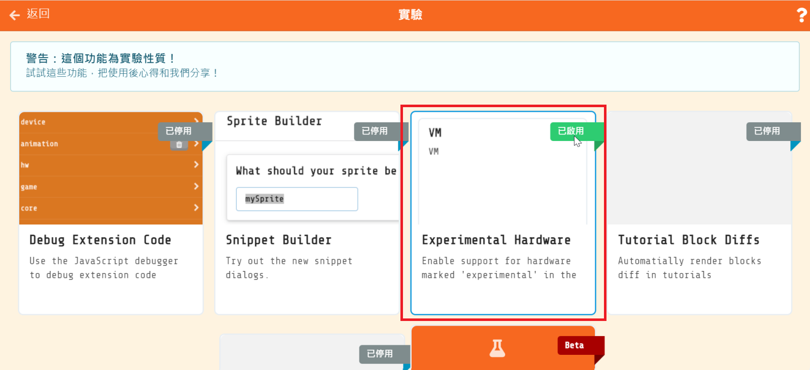
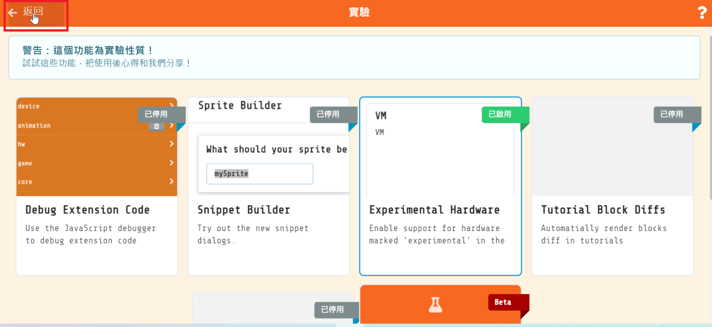
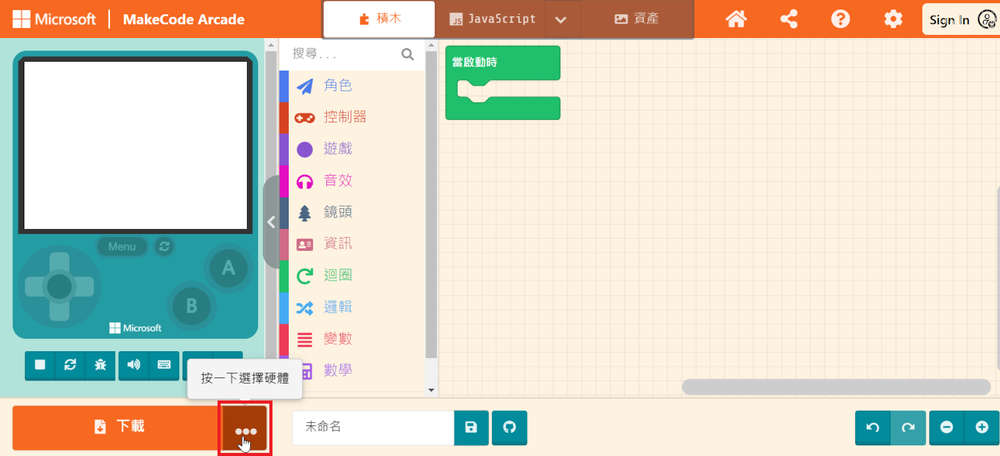
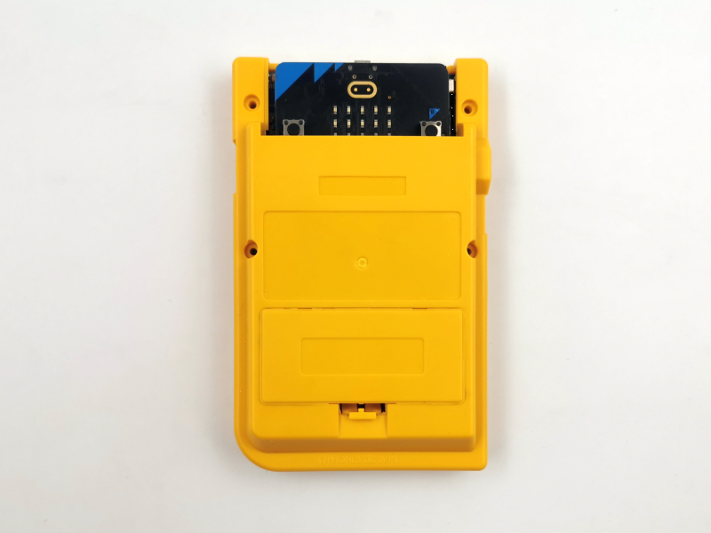

KSB068 PlayGamer 大尺寸 彩屏遊戲機
簡介
KSB068 PlayGamer 2.8" 彩屏遊戲嘰 使用 micro:bit V2 主板 搭配微軟的MakeCode Arcade，這是一個基於網頁且對初學者友善的程式碼編輯器，與平常的MakeCode操作相同，開發者能以 積木 或是 JavaScript ，設計復古街機遊戲。 也可以單純使用micro:bit 的 MakeCode來秀出你的專題項目。
產品規格
2.8吋 彩色面板
遙桿
4個按鈕
電源開關
Micro USB 電源輸入
400maH 鋰電池
電源/充電/飽電 指示燈
尺寸：70 x 111 x 19 mm
功能說明

板載鋰電池保護IC，鋰電池首次裝上時，請先插上USB線上電，否則會有不供電狀況
電源開關：僅對鋰電池和擴展板的USB供電有開關作用
電源：使用板載鋰電池供電，插USB線 到擴展板的USB座 可充電和供電，插USB線 到主板的USB座 可下載程式和供電
充電過程燈號顯示如下
| 燈號 | 作用 |
|---|---|
| 紅燈(充電指示燈)亮，綠燈(飽電指示燈)滅 | 充電中 |
| 紅燈滅，綠燈亮 | 充飽電 |
| 紅燈滅，綠燈滅 | 鋰電池擴展板有問題，請先排除故障原因 |
| 紅燈閃滅，綠燈亮 | 鋰電池沒有插上 |
Arcade下載步驟
Makecode Arcade官方目前對micro:bit V2（nRF52833）還在測試階段，所以我們要先設定你的硬體平台。
目前有2種方法，
一種是直接打開瀏覽器連結 https://arcade.makecode.com/beta?hw=n3
但因為Makecode Arcade目前對micro:bit V2（nRF52833）還在測試階段，所以連結以可能會更改，所以我們會教另一種，就是一步一步設定
1.新增專案 或 打開現有遊戲專案，將還在試驗版本的硬體選項開放出來


2.確認 Expermental Hardware是已啟用狀態（只需要設定一次即可）

3.返回編輯畫面

4.點擊 下載按鈕 旁的選擇硬體，在彈出的選擇硬體視窗


5.拉到最底部選擇N3

設定完成，依照一般micro:bit 下載燒錄方式，就可以將你的遊戲程式燒錄到 micro:bit V2主板
使用教學影片
基本範例
範例下載：選範例後再另存連結
範例一 乒乓球遊戲範例
打開瀏覽器連結 https://arcade.makecode.com/
「 匯入 」-> 「Import File」 匯入 arcade-pong-game.hex

Download完成，擴展板 會秀出遊戲畫面 ，按 上下左右 方向鍵 移動。
按 Menu鍵 設定聲音大小。
其它遊戲範例
黃文玉老師遊戲範例
應用圖示
